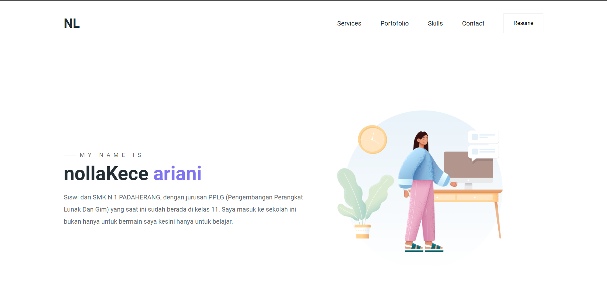
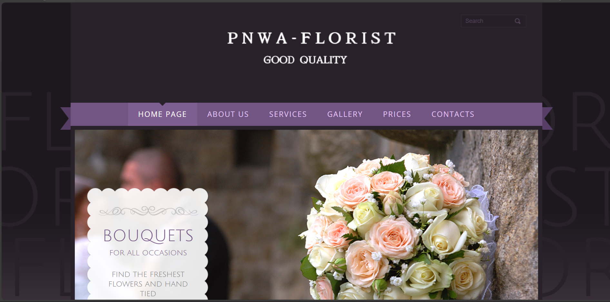
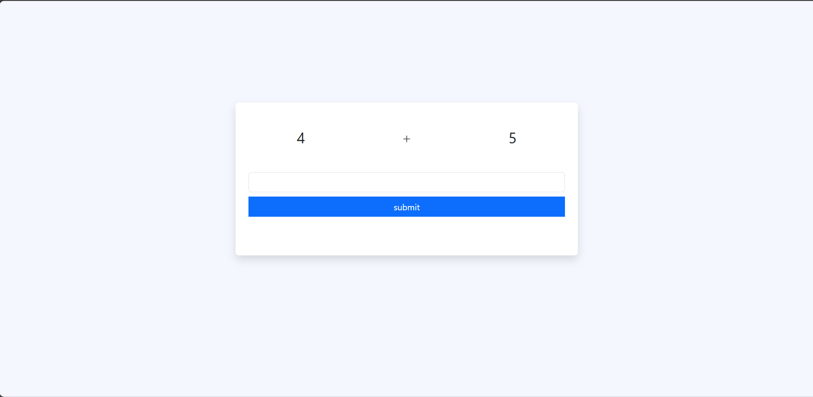

Plies ini isinya profil Nolla Ariani, Jangan cari yang enggak ada
:Ini Saya:
 Haloo, Perkenalkan nama saya Nolla Ariani dari SMK N 1 PADAHERANG kelas XI PPLG B. Saya membuat web prrofil ini dikarenakan tugas web profil yang ada di pelajaran KK yang digurui oleh Pa adeRoni
Haloo, Perkenalkan nama saya Nolla Ariani dari SMK N 1 PADAHERANG kelas XI PPLG B. Saya membuat web prrofil ini dikarenakan tugas web profil yang ada di pelajaran KK yang digurui oleh Pa adeRoni
Bahasa yang Saya Kuasai
- Bahasa Indonesia (of course, because I'm a native here)
- Bahasa Jawa (Mom Languange)
- Bahasa Sunda (Dad Language)
- English Lang (early stages of learning)
- Germany (early stages of learning)
Kutipan Favorit
“Kamu dikelilingi orang yang menyayangimu, sadari itu” - 黄仁俊
"Success is not the end, and failure is not the opposite of success. It’s part of the journey." - LJN
"Being yourself is the coolest thing you can do." - イ・ヘチャン
Proyek Saya

web saya ea
Web ini saya buat dengan mengikuti intruksi yang ada, alhamdulilah karena saya sudah diarahkan lebih awal ini lumayan mudah yah

Web Bunga
Web ini dibuat dengan Bootstrapt.

Math game
Game matematika yang berisi perkalian, pembagian, pertambahan hingga penggurangan.